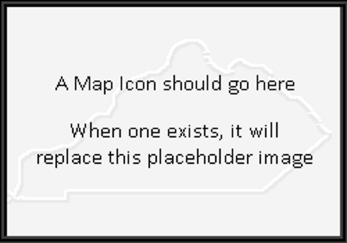

This site serves as a repository and gallery for my maps created for GEO409 - Advanced GIS.
Below you will find thumbnails of each map and a short description of each. Click Read More to explore these maps further.
Map #1

A detailed look at the distribution of widget sales in Outer Mongolia.